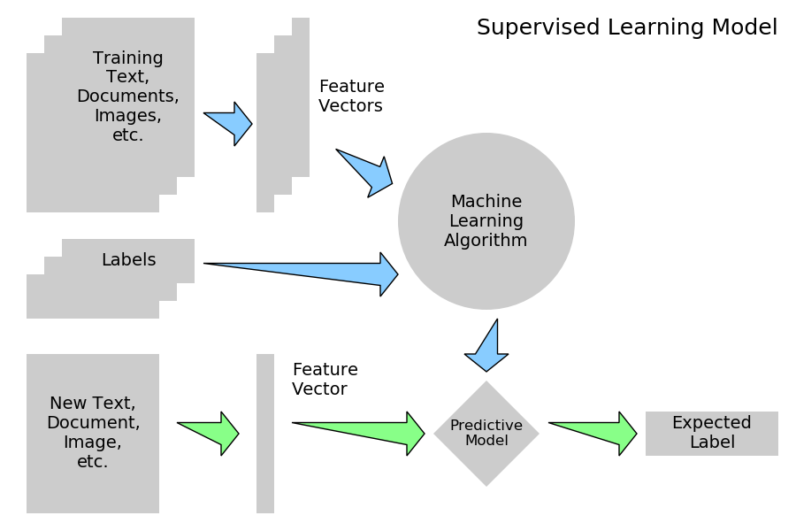
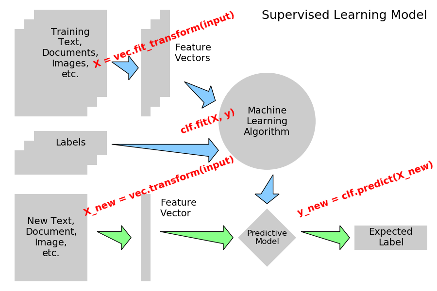
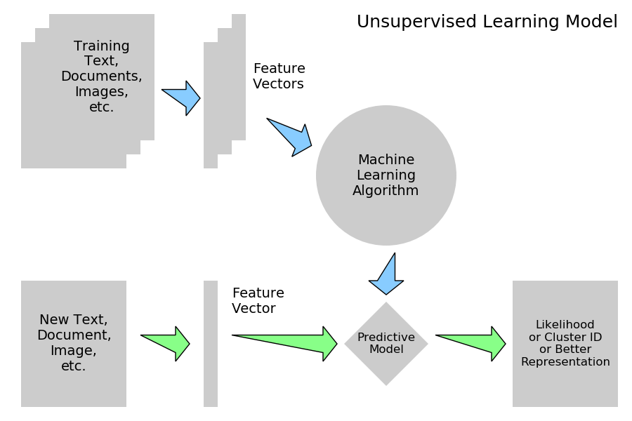

Note
Click here to download the full example code
3.6.10.17. Tutorial Diagrams¶
This script plots the flow-charts used in the scikit-learn tutorials.
- 
- 
- 
import numpy as np
import matplotlib.pyplot as plt
from matplotlib.patches import Circle, Rectangle, Polygon, Arrow, FancyArrow
def create_base(box_bg = '#CCCCCC',
arrow1 = '#88CCFF',
arrow2 = '#88FF88',
supervised=True):
fig = plt.figure(figsize=(9, 6), facecolor='w')
ax = plt.axes((0, 0, 1, 1),
xticks=[], yticks=[], frameon=False)
ax.set_xlim(0, 9)
ax.set_ylim(0, 6)
patches = [Rectangle((0.3, 3.6), 1.5, 1.8, zorder=1, fc=box_bg),
Rectangle((0.5, 3.8), 1.5, 1.8, zorder=2, fc=box_bg),
Rectangle((0.7, 4.0), 1.5, 1.8, zorder=3, fc=box_bg),
Rectangle((2.9, 3.6), 0.2, 1.8, fc=box_bg),
Rectangle((3.1, 3.8), 0.2, 1.8, fc=box_bg),
Rectangle((3.3, 4.0), 0.2, 1.8, fc=box_bg),
Rectangle((0.3, 0.2), 1.5, 1.8, fc=box_bg),
Rectangle((2.9, 0.2), 0.2, 1.8, fc=box_bg),
Circle((5.5, 3.5), 1.0, fc=box_bg),
Polygon([[5.5, 1.7],
[6.1, 1.1],
[5.5, 0.5],
[4.9, 1.1]], fc=box_bg),
FancyArrow(2.3, 4.6, 0.35, 0, fc=arrow1,
width=0.25, head_width=0.5, head_length=0.2),
FancyArrow(3.75, 4.2, 0.5, -0.2, fc=arrow1,
width=0.25, head_width=0.5, head_length=0.2),
FancyArrow(5.5, 2.4, 0, -0.4, fc=arrow1,
width=0.25, head_width=0.5, head_length=0.2),
FancyArrow(2.0, 1.1, 0.5, 0, fc=arrow2,
width=0.25, head_width=0.5, head_length=0.2),
FancyArrow(3.3, 1.1, 1.3, 0, fc=arrow2,
width=0.25, head_width=0.5, head_length=0.2),
FancyArrow(6.2, 1.1, 0.8, 0, fc=arrow2,
width=0.25, head_width=0.5, head_length=0.2)]
if supervised:
patches += [Rectangle((0.3, 2.4), 1.5, 0.5, zorder=1, fc=box_bg),
Rectangle((0.5, 2.6), 1.5, 0.5, zorder=2, fc=box_bg),
Rectangle((0.7, 2.8), 1.5, 0.5, zorder=3, fc=box_bg),
FancyArrow(2.3, 2.9, 2.0, 0, fc=arrow1,
width=0.25, head_width=0.5, head_length=0.2),
Rectangle((7.3, 0.85), 1.5, 0.5, fc=box_bg)]
else:
patches += [Rectangle((7.3, 0.2), 1.5, 1.8, fc=box_bg)]
for p in patches:
ax.add_patch(p)
plt.text(1.45, 4.9, "Training\nText,\nDocuments,\nImages,\netc.",
ha='center', va='center', fontsize=14)
plt.text(3.6, 4.9, "Feature\nVectors",
ha='left', va='center', fontsize=14)
plt.text(5.5, 3.5, "Machine\nLearning\nAlgorithm",
ha='center', va='center', fontsize=14)
plt.text(1.05, 1.1, "New Text,\nDocument,\nImage,\netc.",
ha='center', va='center', fontsize=14)
plt.text(3.3, 1.7, "Feature\nVector",
ha='left', va='center', fontsize=14)
plt.text(5.5, 1.1, "Predictive\nModel",
ha='center', va='center', fontsize=12)
if supervised:
plt.text(1.45, 3.05, "Labels",
ha='center', va='center', fontsize=14)
plt.text(8.05, 1.1, "Expected\nLabel",
ha='center', va='center', fontsize=14)
plt.text(8.8, 5.8, "Supervised Learning Model",
ha='right', va='top', fontsize=18)
else:
plt.text(8.05, 1.1,
"Likelihood\nor Cluster ID\nor Better\nRepresentation",
ha='center', va='center', fontsize=12)
plt.text(8.8, 5.8, "Unsupervised Learning Model",
ha='right', va='top', fontsize=18)
def plot_supervised_chart(annotate=False):
create_base(supervised=True)
if annotate:
fontdict = dict(color='r', weight='bold', size=14)
plt.text(1.9, 4.55, 'X = vec.fit_transform(input)',
fontdict=fontdict,
rotation=20, ha='left', va='bottom')
plt.text(3.7, 3.2, 'clf.fit(X, y)',
fontdict=fontdict,
rotation=20, ha='left', va='bottom')
plt.text(1.7, 1.5, 'X_new = vec.transform(input)',
fontdict=fontdict,
rotation=20, ha='left', va='bottom')
plt.text(6.1, 1.5, 'y_new = clf.predict(X_new)',
fontdict=fontdict,
rotation=20, ha='left', va='bottom')
def plot_unsupervised_chart():
create_base(supervised=False)
if __name__ == '__main__':
plot_supervised_chart(False)
plot_supervised_chart(True)
plot_unsupervised_chart()
plt.show()
Total running time of the script: ( 0 minutes 0.059 seconds)